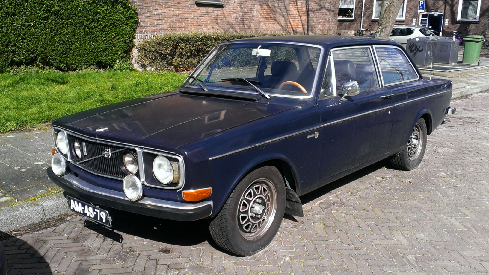
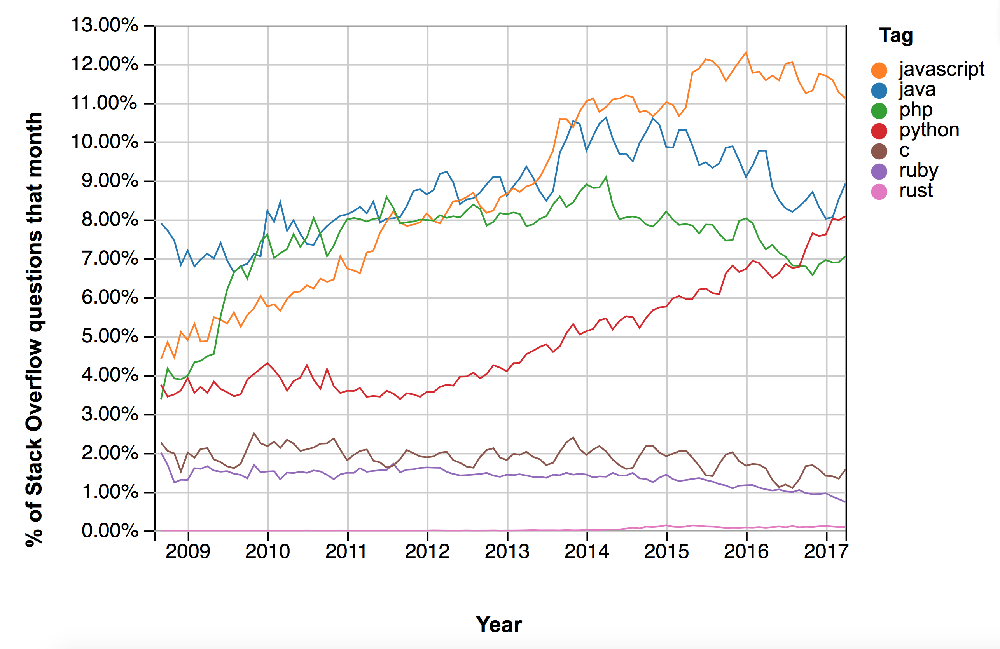

<!doctype html>
<html lang="sv">
<meta charset="utf-8" />
<title>GrillCon Rust</title>

<!-- Mithril HTML Slideshow styles -->
<link href="https://fonts.googleapis.com/css?family=Merriweather" rel="stylesheet">
<link href="https://fonts.googleapis.com/css?family=Oswald:200,400,700" rel="stylesheet">
<link href="css/mithril-slideshow.css" rel="stylesheet" />

<!-- Code formatting using highlight.js -->
<link rel="stylesheet" href="css/default.css">
<link rel="stylesheet" href="css/tomorrow.css">
<script src="js/highlight.pack.js"></script>

<!-- Text formatting using Markdown through showdown.js -->
<script src="js/showdown.min.js"></script>


<!-- Here comes the slides in order -->
<script data-role="slide" type="text/html">
<h1>Rust</h1>
<h2>Ska vi gå nära metallen?</h2>
<p>Emil Folino, efo@bth.se</p>
</script>


<script data-role="slide" type="text/html">
<h1>Webbspråk</h1>
<h3>JavaScript, PHP, Python, Ruby</h3>
</script>


<script data-role="slide" type="text/html">
<h1>Java?</h1>
<h3>Stort! Snabbt?</h3>
</script>


<script data-role="slide" type="text/html">
<h1>C?</h1>
<h3>Segmentation fault</h3>
</script>


<script data-role="slide" type="text/html">

</script>


<script data-role="slide" type="text/html">
<h1>Rust</h1>
<h3>Kompilerar bort segfaults</h3>
<h3>Minnes säkert</h3>
<h3>Tråd säkert</h3>
</script>


<script data-role="slide" type="text/html">

</script>


<script data-role="slide" type="text/html">

</script>


<script data-role="slide" type="text/html">
<h1>TSP</h1>
<h3>Brute Force</h3>
</script>


<script data-role="slide" type="text/html">

</script>


<script data-role="slide" type="text/html">
<p>BTH Lund Uppsala</p>
<p>BTH Uppsala Lund</p>
<p>Lund BTH Uppsala</p>
<p>Lund Uppsala BTH</p>
<p>Uppsala BTH Lund</p>
<p>Uppsala Lund BTH</p>
</script>


<script data-role="slide" type="text/html">
<h3>11 högskoler</h3>
<h3>11! permutationer</h3>
<h3>~40 miljoner unika kombinationer</h3>
</script>


<script data-role="slide" type="text/html">
<pre data-code="tsp.pseudo"></pre>
</script>


<script id="tsp.pseudo" data-role="code" data-language="c" type="text/html">
    The Countdown QuickPerm Algorithm:

    let a[] a list of objects to permute
    let N equal the length of a[]
    p[] of size N+1 to control the iteration
    initialize p[0] to 0, p[1] to 1, ..., p[N] to N
    initialize variable i to 1
    while (i < N) do {
        decrement p[i] by 1
        if i is odd, then let j = p[i] otherwise let j = 0
        swap(a[j], a[i])
        let i = 1
        while (p[i] is equal to 0) do {
            let p[i] = i
            increment i by 1
        } // end while (p[i] is equal to 0)
    } // end while (i < N)
</script>


<script data-role="slide" type="text/html">
<h1>Enough talk!</h1>
</script>


<script data-role="slide" type="text/html">
<h1>Prestanda</h1>
</script>


<script data-role="slide" type="text/html">
    <pre data-code="test.bash"></pre>
</script>


<script id="test.bash" data-role="code" data-language="bash" type="text/html">
$ rustc -C opt-level=3 -C target-cpu=native tsp_rustc.rs
$ time ./tsp_rustc
Shortest trip length: 21.058498609348383
BTH --> Linné --> Lund --> Chalmers --> Karlstad --> Örebro --> Linköping --> KTH --> Uppsala --> Umeå --> Luleå

real	0m1.513s
user	0m1.512s
sys	0m0.004s

</script>


<script data-role="slide" type="text/html">
<table>
<thead>
    <tr>
        <th></th>
        <th>Tid</th>
    </tr>
</thead>
<tbody>
    <tr>
        <td>Python</td>
        <td>4m 58.091s</td>
    </tr>

    <tr>
        <td>Python itertools</td>
        <td>3m 33.739s</td>
    </tr>

    <tr>
        <td>Ruby</td>
        <td>3m 19.508s</td>
    </tr>

    <tr>
        <td>PHP5.6</td>
        <td>2m 51.468s</td>
    </tr>

    <tr>
        <td>PHP7</td>
        <td>1m 10.636s</td>
    </tr>

    <tr>
        <td>JavaScript (nodejs)</td>
        <td>0m 16.649s</td>
    </tr>

    <tr>
        <td>C</td>
        <td>0m 19.605s</td>
    </tr>

    <tr>
        <td>Java</td>
        <td>0m 7.700s</td>
    </tr>

    <tr>
        <td>Rust hash tables</td>
        <td>0m 17.661s</td>
    </tr>

    <tr>
        <td>Rust slices</td>
        <td>0m 1.513s</td>
    </tr>
</tbody>
</table>
</script>


<script data-role="slide" type="text/html">
<h1>Ska vi gå nära metallen?</h1>
</script>


<!-- include essential js-script -->
<script src="js/mithril.min.js"></script>
<script src="js/mithril-slideshow.js"></script>
</html>
